압도적인 스케일의 오픈월드, 논리적인 레벨 레이아웃, 그리고 AAA급 환경 설계에 특화된 레벨 디자이너 이진용입니다. 넷마블네오에서 핵심 IP 프로젝트인 왕좌의 게임: 킹스로드의 레벨 디자인을 담당했고, 현재는 신규 프로젝트 다크프리스트(DP)를 개발하고 있습니다.
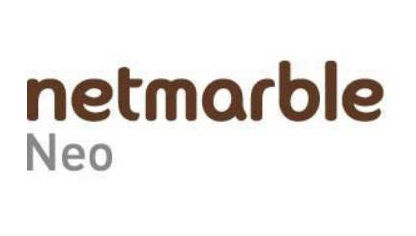
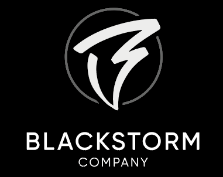

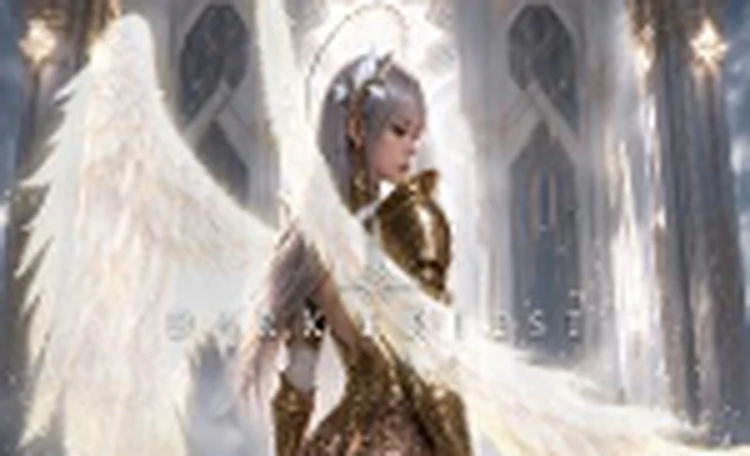


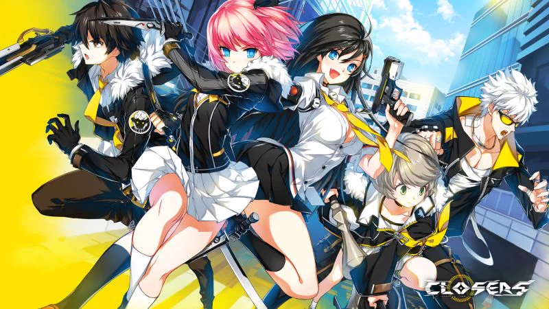
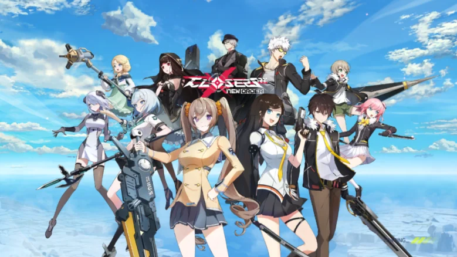
카드를 클릭하면 작업 내용, 이미지, 결과를 슬라이드로 탐색할 수 있습니다.
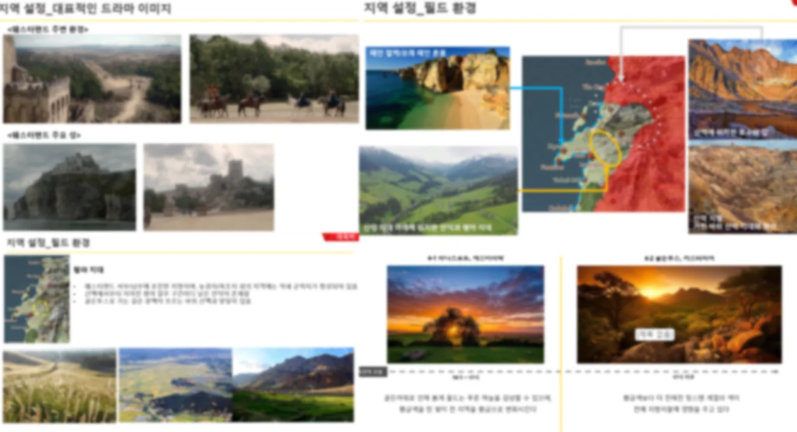
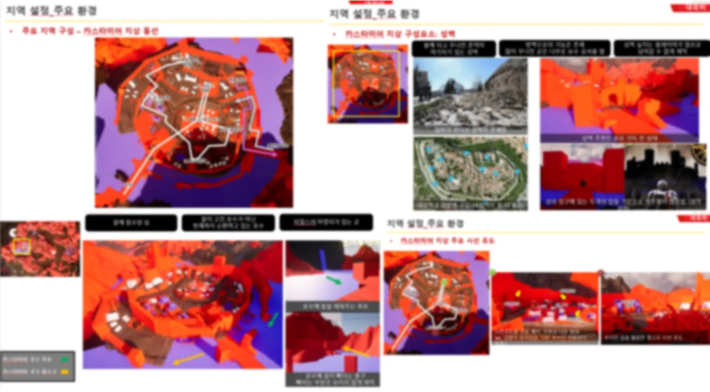
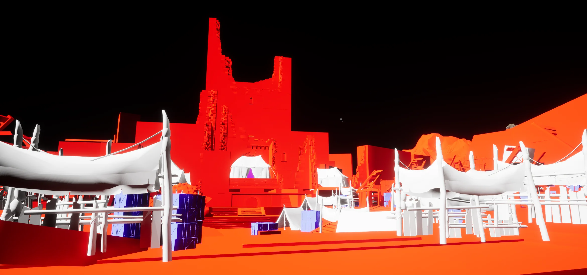

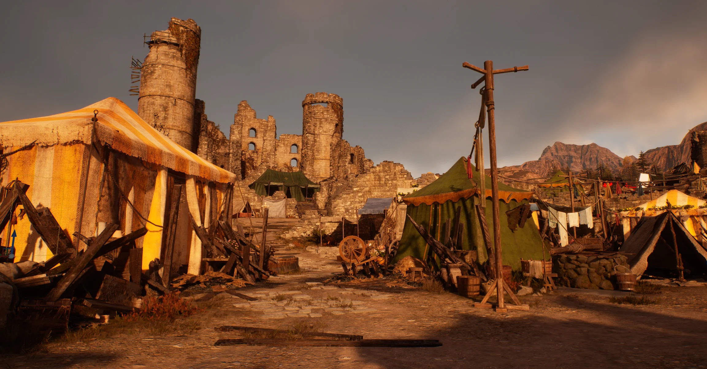
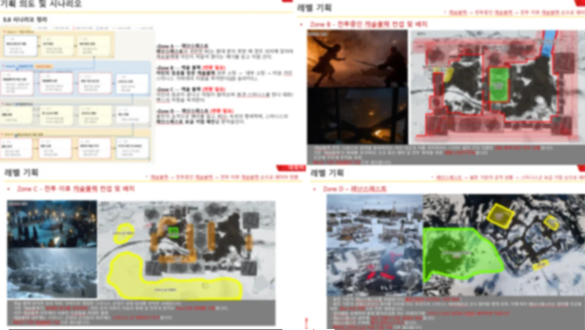

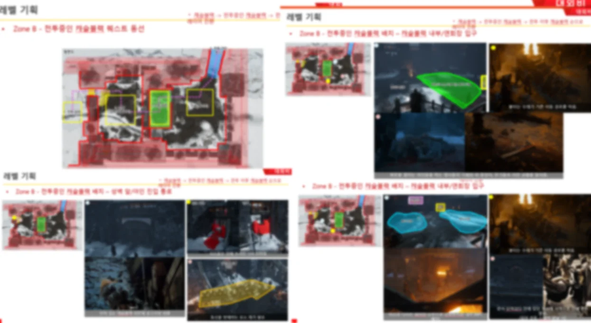


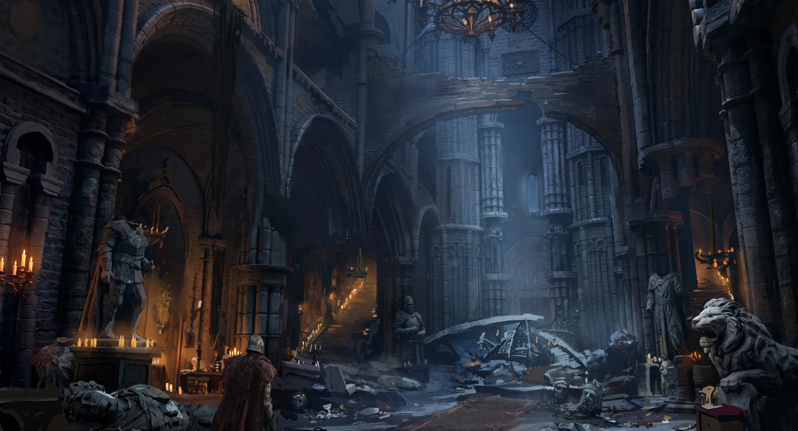
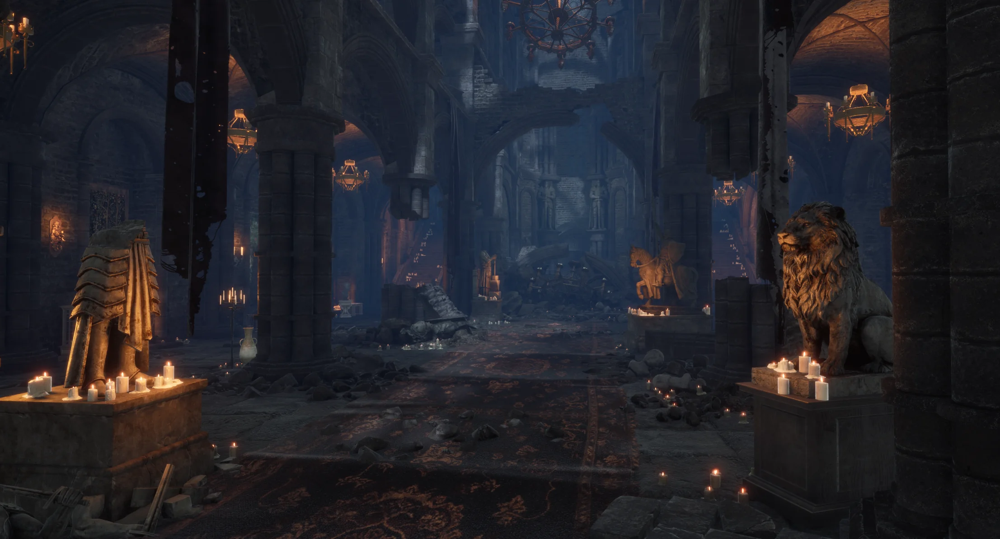

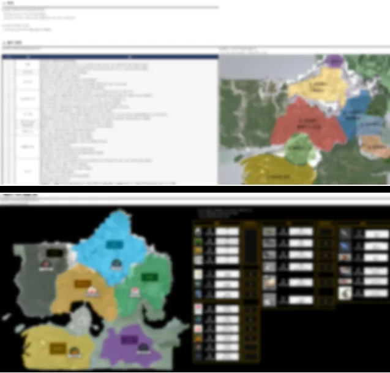

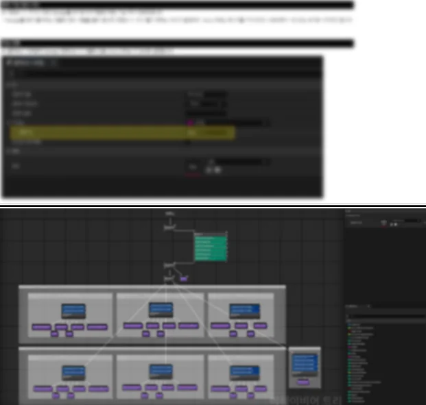
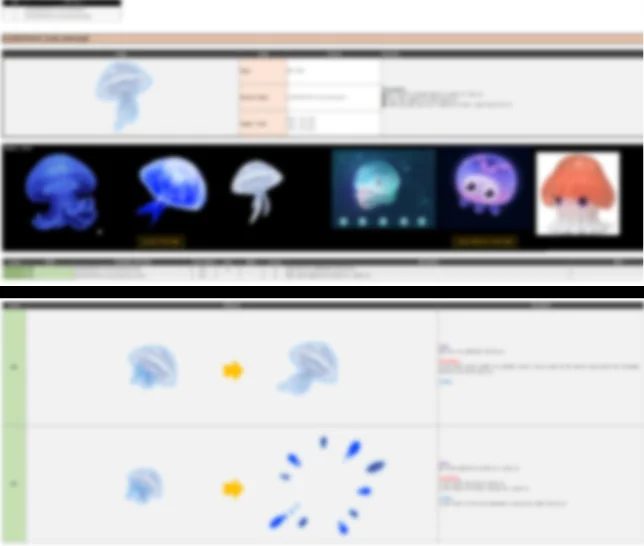


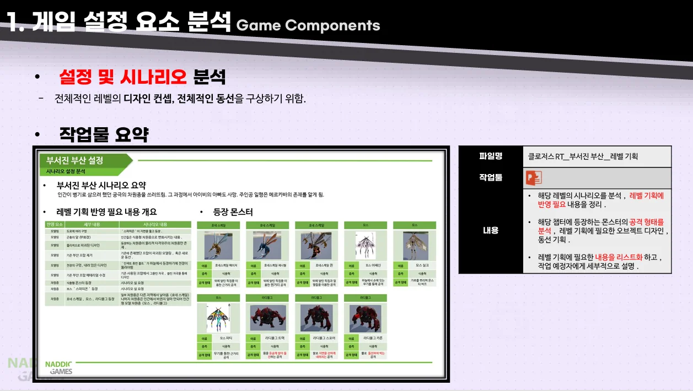
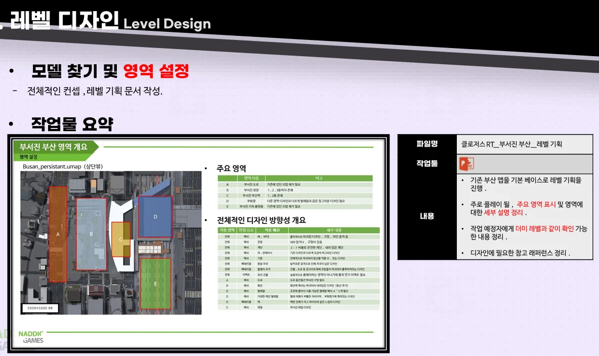

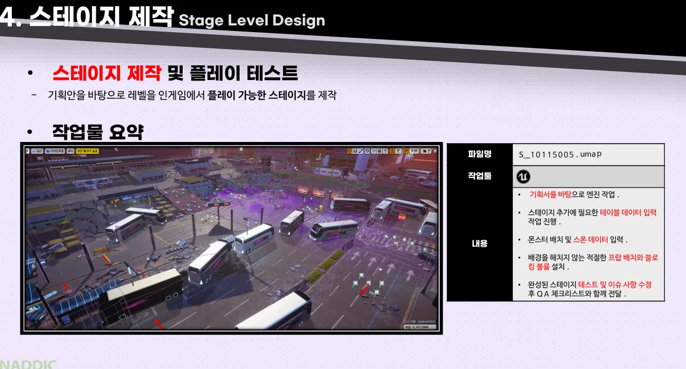